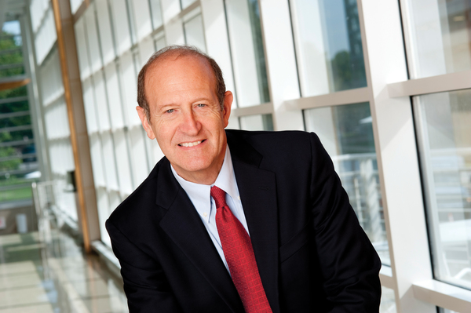
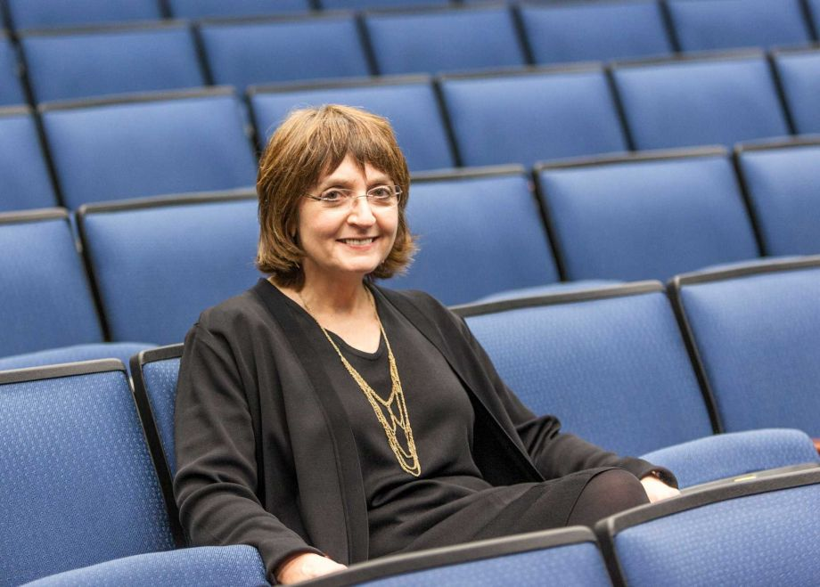

Speakers, Panels, Workshops, and a Residency Luncheon
An amazing lineup to help advance your career as a physician scientist
Speakers
Anna Penn, MD, PhD

Friday, April 15th
11:00 am – 12:00 am
International Ballroom
Neonatologist and Developmental Neuroscientist at Children's National Health System in Washington DC
Anna Penn, MD, PhD, is a clinical neonatologist and developmental neuroscientist at Children's National Health System in Washington DC. She received her MD and PhD from Stanford (MSTP), did her residency at UCSF and returned to Stanford for fellowship and later joined the faculty. Recently, she was recruited to Children’s National where she is in the Fetal Medicine Institute, with additional appointments in the Division of Neonatology, the Center for Neuroscience Research and Associate Professor of Pediatrics at George Washington University. She is the director of translational research for Hospital Based Specialties and Director of the Board of Visitors Cerebral Palsy Prevention Program, a new multidisciplinary program at Children’s National aimed at improving neurological outcome in preterm infants while training the next generation of Cerebral Palsy investigators. In her laboratory, Dr. Penn conducts translational work aimed at understanding and ameliorating preterm brain injury. Specifically, she studies the role of placental function in fetal brain development and damage, with the goal of developing new therapeutic agents to protect the brain in sick newborns.
Diane Griffin, MD
Friday, April 15th
12:00 am – 1:00 am
International Ballroom
Vice President of the US National Academy of Sciences
Diane E. Griffin MD, PhD is University Distinguished Service Professor and former Chair of Molecular Microbiology and Immunology at the Johns Hopkins Bloomberg School of Public Health and Vice President of the US National ademy of Sciences. She earned her BA in Biology at Augustana College in Rock Island, IL and her MD and PhD at Stanford University School of Medicine. Her research interests are in the area of pathogenesis of viral diseases with particular focus on measles and alphavirus encephalitis. These studies address issues related to virulence and the role of immune responses in protection from infection and in clearance of infection. She is past president of the American Society for Virology and the American Society for Microbiology. Among other honors, she has received the Rudolf Virchow Medal (2010), Wallace Sterling Lifetime Alumni Achievement Award from Stanford University (2011), the FASEB Excellence in Science Award (2015) and Maxwell Finland Award (2016).
Gary Nabel, MD

Friday, April 15th
4:00 am – 4:30 am
International Ballroom
Chief Scientific Officer for Global Research and Development at Sanofi
Dr. Gary J. Nabel M.D., Ph.D. is Chief Scientific Officer for Global Research and Development at Sanofi. He also serves as a Senior Vice President and Deputy to the President for Global R&D and in this capacity chairs the Strategic Development and Scientific Advisory Council and Ebola Response Coordination Team for the company.
Dr. Gary Nabel joined Sanofi in November 2012 from the National Institutes of Health, where he served as Director of the Vaccine Research Center (VRC) of the National Institute of Allergy and Infectious Diseases since 1999. During his tenure at the NIH, Dr. Nabel provided overall direction and scientific leadership of the basic, clinical, and translational research activities of the VRC and guides development of novel vaccine strategies against HIV and other emerging and re-emerging infectious diseases, including Ebola/Marburg hemorrhagic fevers, influenza, chikungunya and other viruses.
Dr. Nabel graduated magna cum laude from Harvard College in 1975 and continued his graduate studies at Harvard, completing his Ph.D. in 1980 and his M.D. two years later. He then served as a postdoctoral fellow in the laboratory of David Baltimore at MIT’s Whitehead Institute. Before his appointment at the VRC, Dr. Nabel served as the Henry Sewall Professor of Internal Medicine, professor of Biochemistry, and Howard Hughes Medical Institute investigator at the University of Michigan in Ann Arbor. In addition to his faculty positions, Dr. Nabel also served as the Director of the Center for Gene Therapy and co-director of the Center for Molecular Medicine at the University of Michigan.
In recognition of his expertise at the forefront of virology, immunology, gene therapy, and molecular biology, Dr. Nabel was elected to the Institute of Medicine of the National Academy of Sciences in 1998. Among his many other honors, Dr. Nabel received the Amgen Scientific Achievement Award from the American Society for Biochemistry and Molecular Biology, the Health and Human Services Secretary’s Award for Distinguished Service, and is a fellow of the American Association of Physicians, and the American Academy of Arts Sciences.
Michael Brown, MD, Lasker Foundation Award Lecture
Sunday, April 17th
10:00 am – 11:00 am
Ballroom
Director of the Jonsson Center for Molecular Genetics at the University of Texas Southwestern Medical School
Michael S. Brown received an M.D. degree in 1966 from the University of Pennsylvania. He was an intern and resident at the Massachusetts General Hospital, and a post doctoral fellow with Earl Stadtman at the National Institutes of Health. He is currently Paul J. Thomas Professor of Molecular Genetics and Director of the Jonsson Center for Molecular Genetics at the University of Texas Southwestern Medical School in Dallas. Dr. Brown and his colleague, Dr. Joseph L. Goldstein, discovered the low density lipoprotein (LDL) receptor, which controls cholesterol in blood and in cells. They showed that mutations in this receptor cause Familial Hypercholesterolemia, a disorder that leads to premature heart attacks. Their work laid the groundwork for drugs called statins that block cholesterol synthesis, increase LDL receptors, lower blood cholesterol and prevent heart attacks. Statins are taken daily by more than 20 million people worldwide. Brown and Goldstein shared many awards for this work, including the U.S. National Medal of Science and the Nobel Prize for Medicine or Physiology. Dr. Brown served for 16 years on the Board of Directors of Pfizer, and he is currently a Director of Regeneron Pharmaceuticals.
Huda Zoghbi, MD
Saturday, April 16th
11:15 am – 11:45 am
International Ballroom
Professor of Pediatrics, Neurology, Neuroscience, and Molecular and Human Genetics at Baylor College of Medicine and Investigator with the Howard Hughes Medical Institute
Huda Zoghbi is Professor of Pediatrics, Neurology, Neuroscience, and Molecular and Human Genetics at Baylor College of Medicine and serves as an Investigator with the Howard Hughes Medical Institute. She is also the Director of the Jan and Dan Duncan Neurological Research Institute at Texas Children’s Hospital.
Dr. Zoghbi Zoghbi’s interests range from neurodevelopment to neurodegeneration. Her discovery that Spinocerebellar Ataxia type 1 is caused by expansion of a polyglutamine tract and that such expansion leads to accumulation of the mutant protein in neurons has had profound ramifications since many late-onset neurological disorders involve similar accumulations of disease-driving proteins. Zoghbi’s work in neurodevelopment led to the discovery of the gene Math1/Atoh1 and to showing that it governs the development of several components of the proprioceptive, balance, hearing, vestibular, and breathing pathways. Zoghbi’s group also discovered that mutations in MECP2 cause the neurological disorder Rett syndrome. We now know that mutations in this gene are responsible for a broad spectrum of disorders ranging from mild cognitive disabilities to autism. Her lab is focused on understanding how loss of MeCP2 alters neuronal function to cause behavioral abnormalities. Zoghbi trained many scientists and physician-scientists and is a member of several professional organizations and boards. Among Dr. Zoghbi’s honors are Gruber Prize in Neuroscience, the Pearl Meister Greengard Prize from Rockefeller University, the Scolnick Prize from MIT, and the March of Dimes Prize in Developmental Biology. In 2000 she was elected to the Institute of Medicine, and in 2004 she was elected to the National Academy of Sciences.
Helen Mayberg, MD

Saturday, April 16th
7:30 pm – 9:00 pm
Moulin Rouge
Professor of Psychiatry, Neurology and Radiology and the Dorothy Fuqua Chair in Psychiatric Neuroimaging and Therapeutics at Emory University
Helen Mayberg, M.D. is Professor of Psychiatry, Neurology and Radiology and the Dorothy Fuqua Chair in Psychiatric Neuroimaging and Therapeutics at Emory University. Over the last 25 years, her multi-disciplinary depression research team has worked to integrate cutting-edge imaging strategies, quantitative behavioral and psychophysiological metrics, and experimental treatment trials to define brain-based biomarkers that can optimize treatment selection for individual patients. This work was foundational for the first studies of subcallosal cingulate deep brain stimulation for treatment resistant depression and remains the cornerstone of current studies to both refine and optimize DBS implementation and characterize network mechanisms mediating its antidepressant effects. Dr. Mayberg is a neurologist, trained at Columbia's Neurological Institute in New York, with fellowship training in nuclear medicine at Johns Hopkins. She is a member of the National Academy of Medicine, among other honors, and participates in a wide variety of editorial, advisory and scientific activities across multiple fields in neuroscience.
David Wright, MD
Sunday, April 17th
9:00 pm – 10:00 pm
TBA
Professor of Psychiatry, Neurology and Radiology and the Dorothy Fuqua Chair in Psychiatric Neuroimaging and Therapeutics at Emory University
Dr. Wright is a tenured associate professor of emergency medicine, Director of the Emergency Neurosciences Laboratory in the Department of Emergency Medicine, and the Director for the Center for Injury Control at Emory University. He is a board certified emergency medicine physician practicing at Emory affiliated hospitals and Grady Memorial Hospital, Atlanta’s primary Level 1 Trauma Center. His interests include the prevention and mitigation of injury, and the preclinical and clinical assessments of traumatic brain injury, stroke and other acute neurological conditions.
He is also an adjunct faculty in the Department of Biomedical Engineering at the Georgia Institute of Technology and works closely with an elite team of engineers at the Georgia Tech Research Institute where he participates in numerous concussion research and technology development endeavors. He is the Co-inventor of the DETECT technology, a rapidly deployable, easily administered, comprehensive system for the assessment of concussion and other neurological ddisorders.
Panels
Key Issues Facing Physician Scientists: Insights and Policies Governing Bench to Bedside, Entrepreneurship in Biomedical Research
Every year, physicians and physician-scientists confront challenges including inadequate funding and mounting administrative burdens. Confronting these challenges will require involvement in the political process by physicians and physician-scientists. Our policy session will provide physician-scientists and trainees with information on a) how to get involved with translational medical and science advocacy/policy; b) how the government and FDA help promote clinical and translational research; and c) how the drug/therapeutics approval process works, including challenges and key factors helpful in the process.
- Friday, April 15th, 2:00 pm – 3:00 pm
- International Ballroom
Couples in Medicine
A discussion with couples in prominent scientists in medicine about what it's like to be married in a demanding field.
- Friday, April 15th, 6:00 pm – 7:00 pm
- TBA
Post-Graduate Opportunities
Panelists from industry, academia, government, and other sectors discuss the specific opportunities and challenges associated with a career in each of their areas.
- Sunday, April 17th, 11:00 am – 12:00 am
- TBA
What is Translational Research?
Dr. Robert Nagele of Rowan University School of Osteopathic Medicine will lead a discussion aimed at undergraduates interested in pursuing MD/PhD or DO/PhD training. He will discuss the nature of translational research from his perspective as an investigator of neurodegenerative diseases.
- Sunday, April 17th, 10:00 am – 11:00 am
- TBA
Ethics - Paper submissions and data reproducibility
Discussion of the ethical concerns in data reproducibility and its effect on paper submissions.
- Sunday, April 17th, 11:00 am – 12:00 am
- TBA
Technological Innovations
APSA will be hosting Dr. Jake Riggles in a special Technology Transfer Workshop. Dr. Riggles will present a case study of intellectual property licensing based on his own experiences of navigating the patenting process. This is a workshop for anyone with an interest in learning more about patents, whether you are just starting to develop an idea or have difficulties with specific phases of the process. Dr. Riggles will engage the audience through personal stories, expert pearls and caveats, and informal Q&As to help you achieve success in your patenting goals.
- Sunday, April 17th, 11:00 am – 12:00 am
- TBA
Residency Luncheon
On the final day, APSA will host a luncheon where there will be an opportunity to meet and converse with research-oriented residency and fellowship program directors. Come get your questions answered by the experts about specific programs and the nature of physician-scientist training after medical and graduate school. If you are applying to residency soon, this is an unrivaled opportunity to directly connect with program directors.
- Sunday, April 17th, 11:00 am – 12:00 am
- Moulin Rouge